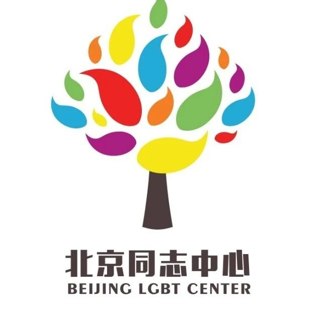

社群赋能问卷！你的5分钟可能改变LGBTQ+的未来
编者荐语：
这是一份关于性少数活动需求度的调查，调查结果将服务于社群活动的设计。欢迎每一个多元的你来填写问卷，共同为社群赋能！
以下文章来源于北同文化 ，作者尊重多元合作
北京同志中心官方微信。北京同志中心成立于2008年2月14日，作为一家民间公益组织，通过在北京地区提供社区服务和开展倡导活动来增强中国同志（LGBT）人群的自我认同；推动同志运动，消除歧视，实现平等；并促进多元文化和公民社会的发展。

调查背景
尽管近年来各种性少数的NGO组织得到了一定发展，各类活动形式也如雨后春笋般纷纷涌现，但较为全面的社群活动需求度调查依旧相对匮乏。
根据《中国性少数群体生存状况》及《中国同志心理健康报告》，我们发现，社群作为性少数群体互助、交流、促进、成长的安全空间，在实现自我认同、建立强联结、产生强信任、给予环境支持等方面发挥着积极作用。
为了开展更贴近社群需求的活动，我们设计了本次问卷。问卷所得结果将由13家专注LGBTQ活动的NGO组织共享，共同营造自由平等的交流平台。
以下数据来源于：
《中国性与性别少数群体生存状况调查报告》
《中国同志心理健康报告》
7000万，70%，8.53%，40%
据统计，中国存在性少数群体约7000万
因性倾向、性别认同、性别表达，
超过70%的人曾产生心理困扰
身份认同上，约8.53%至今不认同自己性倾向
已确定性倾向的人群中，约40%尚未出柜
我们希望，通过社群活动，
让更多的伙伴，实现自我认同！
58.21%，49.03%，43.92%，60.61%
18岁以下的青少年性少数群体中58.21%
有抑郁倾向或抑郁高风险
18岁以上的成人性少数群体中49.03%
有抑郁倾向或抑郁高风险
43.92%的性少数群体接受或考虑过心理服务
其中60.61%的人最希望解决的问题是改善情绪
我们希望，通过社群活动，
让更多的伙伴，进行心理互助！
56.1%，39.6%，5.4%
约56.1%的性少数群体被家人不公平对待
约39.6%的性少数群体在学校遭到歧视
仅有5.4%的性少数在职场中选择完全出柜
我们希望，通过社群活动，
让更多的伙伴，得到环境支持！
衷心感谢，点开这份调查问卷的你
你的选择，将会改变性少数的未来
这是一份性少数活动需求度的调查
调查结果将服务于社群活动的设计
填写问卷，共同为社群赋能
由你决定，未来的活动形式
长按扫描下方二维码
或点击【阅读原文】参与调查
感谢你一路以来的支持
遇见彩虹前的风雨
我们一起度过
感谢，有你
发起方

联合推广伙伴
（以下排序不分先后）


作者：星楷
排版：Alan
推荐阅读

让我们的骄傲被看见